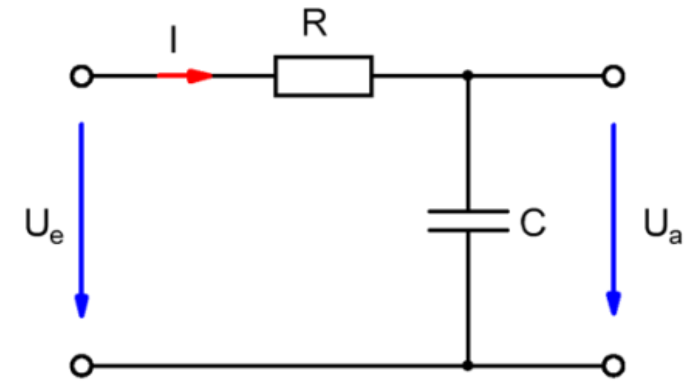
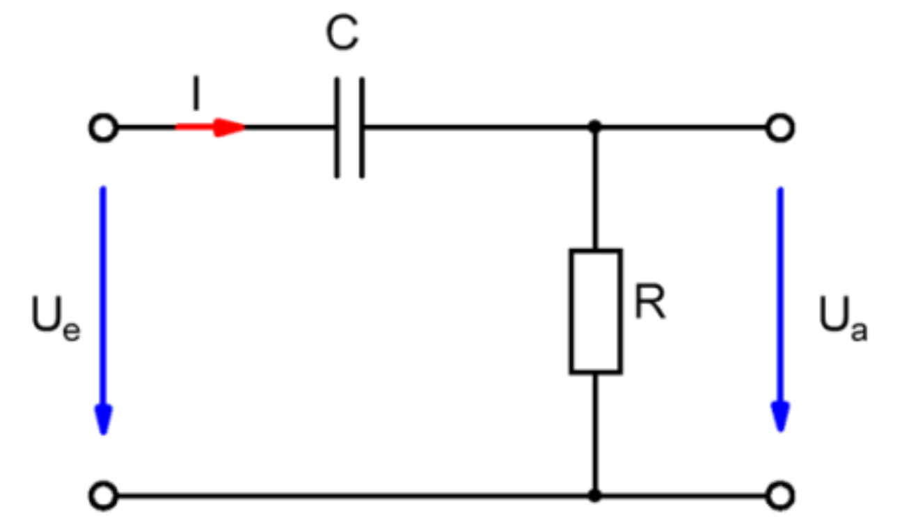

Filterschaltungen
Definition
Filterschaltungen sind Schaltungen, die in Abhängigkeit der Frequenz bestimmte Spannungen sperren.
TiefpassTiefpässe sperren hohe Frequenzen und lassen niedrige Frequenzen passieren.
Zusammenhang Eingang - und Ausgangsspannung
 $$ \frac{U_a}{U_e} = \frac{X_C}{Z}$$ $$= \frac{X_C}{\sqrt{R^2+X_C^2}}$$ $$= \frac{\frac{1}{2\pi \cdot f \cdot C}}{\sqrt{R^2 + \left( \frac{1}{2\pi \cdot f \cdot C} \right)^2}}$$ $$ = \frac{1}{\sqrt{1+ \left( 2\pi \cdot f \cdot C \cdot R \right)^2}}$$Grenzfrequenz
Herleitung
Bei Grenzfrequenz gilt:
$$ \frac{U_a}{U_e} = \frac{1}{\sqrt{2}} $$ $$ \Rightarrow \frac{X_C}{\sqrt{R^2 + X_C^2}} = \frac{1}{\sqrt{2}}$$ $$ \Leftrightarrow 2X_C^2 = R^2 + X_C^2 $$ $$\Leftrightarrow X_C = R $$ $$\Leftrightarrow R = \frac{1}{2\pi \cdot f_g \cdot C} $$ $$\Leftrightarrow f_g = \frac{1}{2\pi \cdot R \cdot C} $$Formel
$$f_g = \frac{1}{2\pi \cdot R \cdot C} $$Der Hochpass sowie Tiefpass haben die gleiche Formel für die Grenzfrequenz
HochpassHochpässe lassen hohe Frequenzen passieren und sperren niedrige Frequenzen.
 $$ \frac{U_a}{U_e} = \frac{R}{Z}$$ $$= \frac{R}{\sqrt{R^2+X_C^2}}$$ $$= \frac{R}{\sqrt{R^2 + \left( \frac{1}{2\pi \cdot f \cdot C} \right)^2}}$$ $$ = \frac{1}{\sqrt{1+ \left( \frac{1}{2\pi \cdot f \cdot C \cdot R }\right)^2}}$$Grenzfrequenz
Herleitung
Bei Grenzfrequenz gilt:
$$ \frac{U_a}{U_e} = \frac{1}{\sqrt{2}} $$ $$ \Rightarrow \frac{R}{\sqrt{R^2 + X_C^2}} = \frac{1}{\sqrt{2}}$$ $$ \Leftrightarrow 2R^2 = R^2 + X_C^2 $$ $$\Leftrightarrow X_C = R $$ $$\Leftrightarrow R = \frac{1}{2\pi \cdot f_g \cdot C} $$ $$\Leftrightarrow f_g = \frac{1}{2\pi \cdot R \cdot C} $$Formel
$$f_g = \frac{1}{2\pi \cdot R \cdot C} $$Bemerkung
Der Hochpass sowie Tiefpass haben die gleiche Formel für die Grenzfrequenz